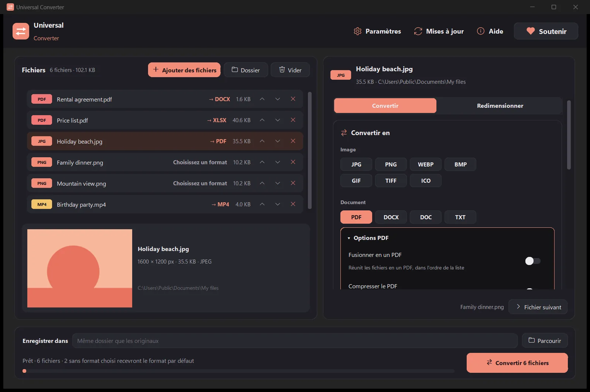
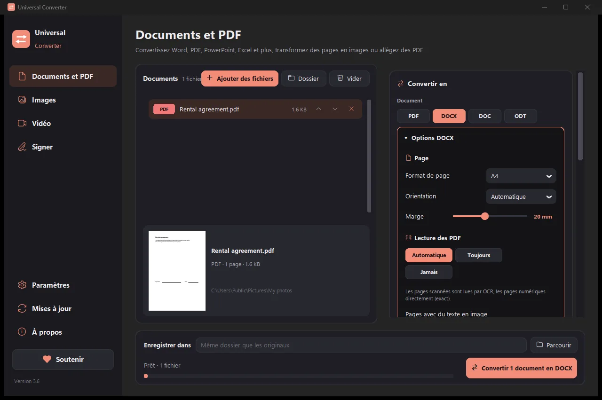
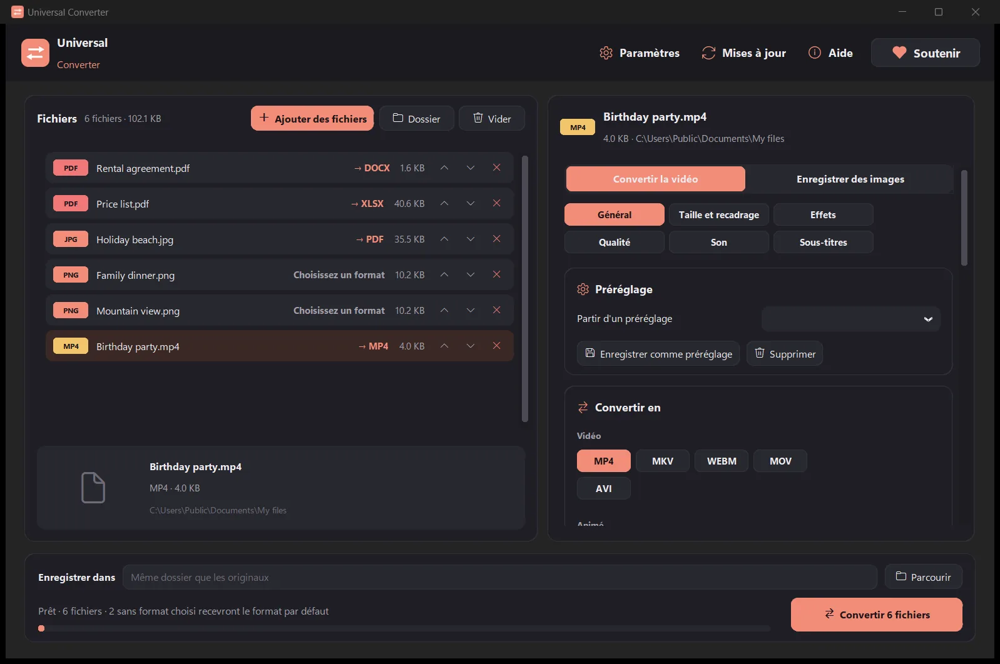
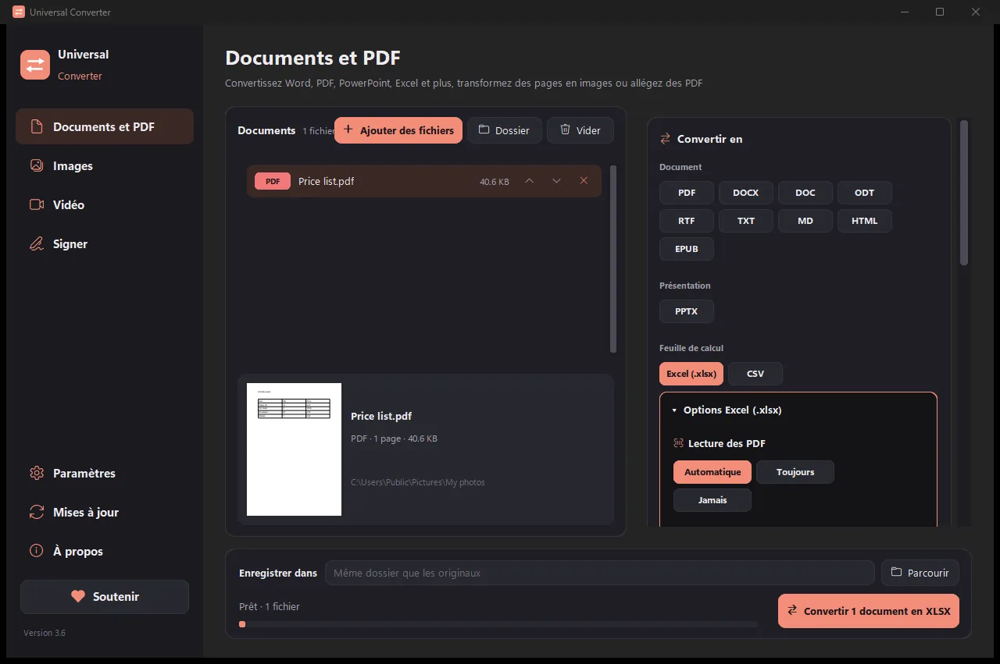
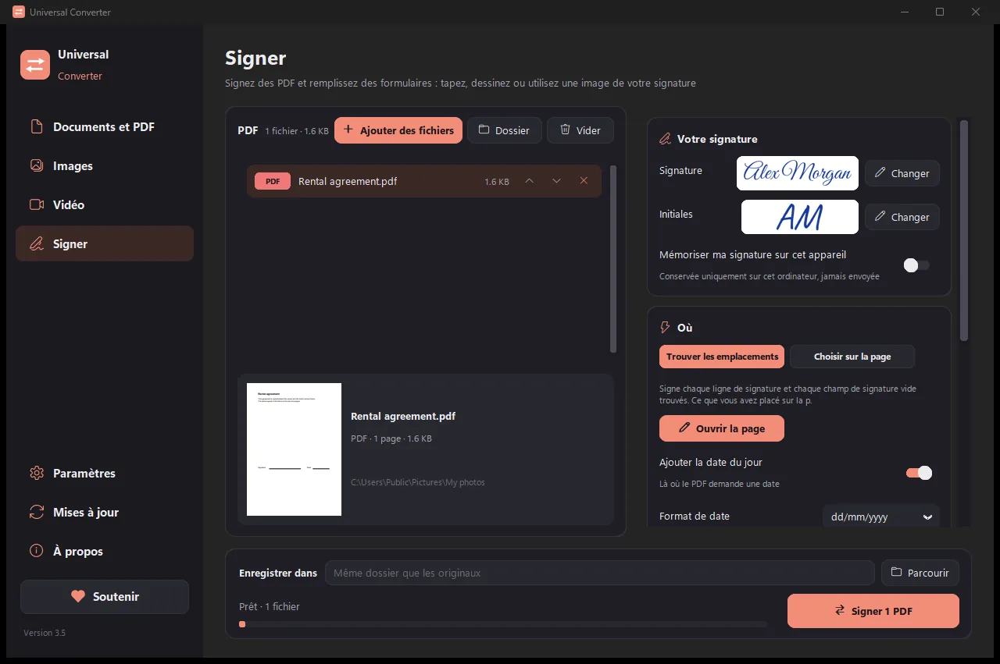

Convertissez vos fichiers sur votre propre appareil
Images, documents, vidéo et audio, PDF et tableaux vers Excel, le tout dans une seule application. Rien n'est envoyé en ligne : vos fichiers ne quittent jamais votre appareil.
Installer et mettre à jour
- Ouvrez le fichier .dmg téléchargé et faites glisser Universal Converter dans Applications.
- Ouvrez l'app. La première fois, macOS la bloque car elle n'est pas signée par Apple : cliquez sur Terminé.
- Ouvrez Réglages Système > Confidentialité et sécurité, faites défiler, cliquez sur « Ouvrir quand même » et saisissez votre mot de passe. Ce n'est à faire qu'une fois.
Mises à jour : si vous l'autorisez à la première ouverture, l'app recherche les nouvelles versions à chaque démarrage, vérifie leur signature numérique et les installe quand vous le choisissez.
Installer et mettre à jour
- Touchez « Télécharger pour Android » sur votre téléphone.
- Ouvrez le fichier téléchargé. Si Android le demande, autorisez votre navigateur ou gestionnaire de fichiers à installer des apps.
- Touchez Installer.
Mises à jour : l'app vérifie environ une fois par jour et vous prévient quand une nouvelle version est prête. Téléchargez-la de la même façon et installez-la par-dessus l'ancienne ; vos réglages sont conservés.
Installer et mettre à jour
- Téléchargez le fichier .AppImage.
- Rendez-le exécutable : clic droit, Propriétés > Permissions, puis autorisez son exécution comme programme (ou dans un terminal : chmod +x Universal-Converter-*.AppImage).
- Double-cliquez dessus. Rien n'est installé : l'application est ce seul fichier.
Mises à jour : si vous l'autorisez à la première ouverture, l'application cherche les nouvelles versions à chaque démarrage, vérifie leur signature numérique et remplace le fichier AppImage là où il se trouve.

Privé
Tout se fait sur votre appareil. Pas d'envoi, pas de file d'attente, pas de limite de taille.
Gratuit
Gratuit, sans publicité, sans compte et sans filigrane.
34 langues
Français, anglais, grec, espagnol, italien, allemand, portugais (Portugal et Brésil), polonais, russe, arabe, hébreu, chinois, japonais, coréen, tamoul, afrikaans, yoruba, haoussa, hindi, indonésien, turc, vietnamien, suédois, néerlandais, danois, ukrainien, tchèque, roumain, bulgare, norvégien, malais, filipino et swahili.
Cinq outils dans une fenêtre

Documents et PDF
Convertissez entre PDF, Word, ODT, RTF, TXT, Markdown, HTML, EPUB, PowerPoint et Excel. Transformez des pages en images et réunissez plusieurs fichiers en un PDF. Polices, tailles et couleurs sont conservées. Allégez vos PDF à la taille de votre choix. Les scans et les formulaires remplis deviennent du texte et des tableaux modifiables, disposés comme sur la page. Les tableaux, même sans lignes comme sur les relevés bancaires, arrivent dans Word sous forme de vrais tableaux, et les anciens fichiers Word (.doc) et PowerPoint (.ppt) s'ouvrent aussi.
Images
Convertissez entre JPG, PNG, WEBP, TIFF, BMP, GIF et ICO. Redimensionnez en pixels, en pourcentage ou en taille de fichier, réunissez des images en un PDF ou un Word, et lisez le texte des images (OCR). Les PDF aussi : chaque page devient une image.

Vidéo
Convertissez des vidéos entre MP4, MKV, WebM, MOV et AVI, et compressez-les, en AV1, H.265, H.264 ou VP9. Coupez, recadrez, faites pivoter et redimensionnez, créez des GIF, enregistrez des images de la vidéo, ou gardez seulement le son en MP3, M4A, FLAC, WAV, OGG ou Opus. Avec plusieurs vidéos, chacune peut avoir ses propres réglages. Sur Android : MP4, MKV, WebM, MOV ou GIF, ou seulement le son en M4A, OGG ou WAV ; couper, recadrer, faire pivoter, redimensionner et enregistrer des images.

Excel
Extrayez les tableaux de PDF, de scans et de photos vers Excel ou CSV : relevés bancaires, factures, listes de prix. Lit le français, l'anglais, le grec et plus de 30 autres langues.

Signer
Signez des PDF et remplissez des formulaires. Tapez votre nom dans un style manuscrit, dessinez votre signature ou utilisez-en une photo. L'application trouve seule les lignes de signature, ou vous cliquez ou touchez là où vont la signature, les initiales, la date, du texte ou des coches. Signez de nombreux fichiers d'un coup ; les originaux restent intacts.
- Utilise la carte graphique pour la vidéo quand c'est possible : en général 5 à 20 fois plus rapide.
- Glissez des dossiers entiers : tous les fichiers sont convertis d'un coup.
- Vous indique quand un fichier va dans un autre onglet et l'y déplace en un clic.
- Vous prévient des nouvelles versions ; sous Windows, Mac et Linux, il peut les installer pour vous, vérifiées numériquement.
- Apparence claire ou sombre, comme votre appareil.
Comment ça marche
- Ouvrez Universal Converter et choisissez Documents et PDF · Images · Vidéo · Signer à gauche.
- Glissez vos fichiers ou un dossier entier dans la fenêtre, ou cliquez sur Ajouter des fichiers.
- Cliquez sur Convertir. Les nouveaux fichiers sont enregistrés à côté des originaux, ou dans le dossier de votre choix.
Ce qu'il sait faire
- Convertir un PDF en Word
- Convertir des documents Word en PDF
- Réunir plusieurs fichiers en un PDF
- Compresser un PDF à la taille de votre choix
- Compresser un PDF à 100 Ko, 200 Ko ou la taille demandée par un formulaire
- Convertir les pages d'un PDF en images JPG
- Transformer un document scanné en fichier Word modifiable
- Convertir des images entre JPG, PNG, WEBP et plus
- Redimensionner des images ou les réduire à une taille de fichier
- Redimensionner une photo ou une signature à 20 Ko, 50 Ko ou à des pixels exacts
- Réunir des photos en un seul PDF
- JPG en PDF de moins de 100 Ko
- Copier le texte d'une image (OCR)
- Compresser une vidéo sans l'envoyer en ligne
- Convertir des vidéos entre MP4, MKV, WebM, MOV et AVI
- Enregistrer le son d'une vidéo en MP3
- Créer un GIF à partir d'une vidéo
- Extraire les tableaux d'un PDF vers Excel
- Convertir un relevé bancaire PDF en Excel
- Extraire les tableaux de factures PDF vers Excel
- Signer un PDF
- Remplir un formulaire PDF
Questions
Est-ce vraiment gratuit ?
Oui. Universal Converter est gratuit, sans publicité, sans compte et sans limite de durée. S'il vous est utile, vous pouvez soutenir son développement par une contribution volontaire, mais ce n'est jamais obligatoire.
Mes fichiers sont-ils envoyés quelque part ?
Non. Chaque conversion se fait sur votre propre appareil, donc cela fonctionne aussi sans connexion internet. L'application ne se connecte que pour chercher des mises à jour, pour télécharger les alphabets de reconnaissance de texte que vous choisissez et, si vous l'autorisez, pour envoyer des rapports d'erreur anonymes.
Le téléchargement est-il sûr ?
Oui. Avant d'arriver sur cette page, les téléchargements Windows, Mac, Linux et Android de chaque version sont analysés par environ 60–70 antivirus sur VirusTotal ; le lien sous chaque bouton de téléchargement ouvre le rapport de ce fichier. L'application n'affiche pas de publicité et ne collecte aucune donnée personnelle, et la version du Microsoft Store est en plus vérifiée et signée par Microsoft.
Windows affiche un avertissement SmartScreen. Est-ce normal ?
Oui. Le programme d'installation n'est pas encore signé, donc Windows ne le reconnaît pas. Choisissez « Informations complémentaires », puis « Exécuter quand même ». Les mises à jour suivantes sont vérifiées numériquement par l'application elle-même. Ou installez-le depuis le Microsoft Store, qui n'affiche aucun avertissement.
Comment l'ouvrir sur un Mac ?
Ouvrez le fichier téléchargé et faites glisser Universal Converter dans Applications. L'application n'est pas signée par Apple, donc la première fois que vous l'ouvrez macOS la bloque : cliquez sur Terminé, puis ouvrez Réglages Système > Confidentialité et sécurité, cliquez sur « Ouvrir quand même » et saisissez votre mot de passe. Une seule fois suffit.
Comment l'installer sur Android ?
Téléchargez l'APK sur votre téléphone, ouvrez-le et autorisez l'installation quand c'est demandé (Android 10 ou ultérieur). Les 34 langues sont intégrées ; choisissez-en une dans les Paramètres de l'application. L'application vous prévient quand une nouvelle version est disponible.
Dans quelles langues est-il disponible ?
L'application est en français, anglais, grec, espagnol, italien, allemand, portugais (Portugal et Brésil), polonais, russe, arabe, hébreu, chinois, japonais, coréen, tamoul, afrikaans, yoruba, haoussa, hindi, indonésien, turc, vietnamien, suédois, néerlandais, danois, ukrainien, tchèque, roumain, bulgare, norvégien, malais, filipino et swahili. Vous choisissez la langue dans le programme d'installation, ou plus tard dans les Paramètres.